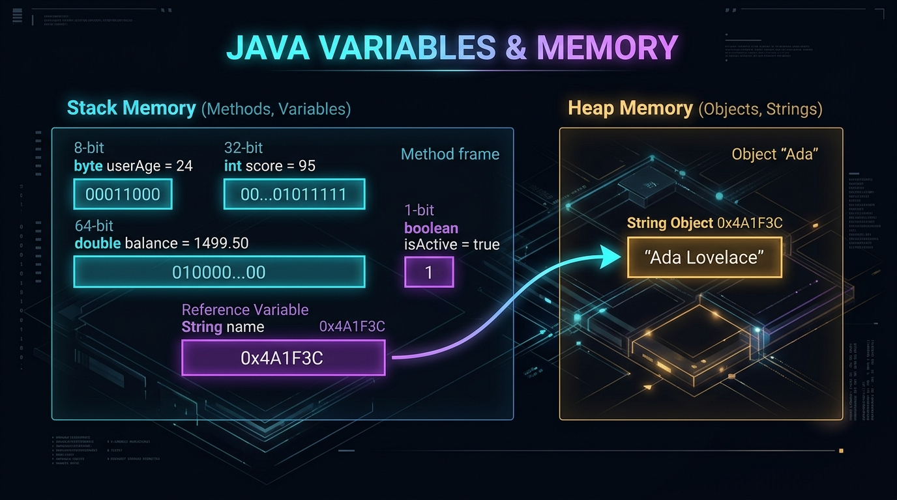
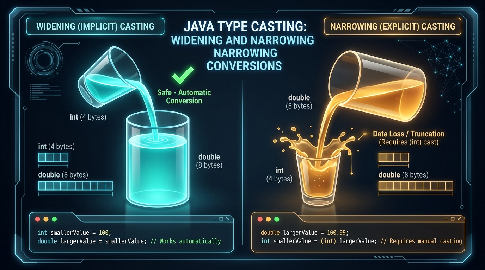

Before we manipulate numbers and text, connect today's lesson with Session 1:
- Where code lives: everything today sits inside
public static void main(String[] args) { ... }. - Compile vs run: spell a type wrong (
Intinstead ofint) andjavacstops you before the program ever runs. - RAM is temporary: the variables you create today exist only while the method runs; when
main()returns, that memory is reclaimed.
1. What is a Variable?
When a program runs it needs to store information in your computer's RAM. A variable is a reserved slot in memory that has been given a human-friendly name.
Imagine a warehouse of empty boxes:
1. You put a label on a box: studentAge.
2. You declare what may go inside (e.g. only whole numbers).
3. You place the number 21 inside.
4. On the student's birthday you replace it with 22.
Declaration & Initialization
// Step 1: Declaration (reserve memory of a type, with a name)
int score;
// Step 2: Initialization (put the first value in the box)
score = 95;
// Combined (declaration + initialization — best practice)
int age = 24;
double hourlyRate = 35.50;
String studentName = "Ada Lovelace";2. Variable Naming Rules & Best Practices
Java has strict rules (break them and the compiler errors) and community conventions (follow them and your code reads professionally).
| Rule | Legal ✅ | Illegal / non-compliant ❌ |
|---|---|---|
| Cannot start with a digit | player1Score, total2 | 1stPlayer (compiler error) |
| Allowed characters | letters, digits, _, $ | user-name, total#, price@tax |
| No Java keywords | classNumber, intVal | class, public, static, void |
| Convention: camelCase | userAccountBalance, maximumSpeed | user_account_balance, MaxSpeed (Pascal is for classes) |
3. The 8 Java Primitive Data Types
Java is strongly typed: you must tell the compiler exactly what kind of data each variable holds. There are 8 built-in primitive types:
| Type | Category | Size in RAM | Range | Example |
|---|---|---|---|---|
byte | Integer | 1 byte (8 bits) | -128 to 127 | byte age = 25; |
short | Integer | 2 bytes (16 bits) | -32,768 to 32,767 | short altitude = 15000; |
int | Integer | 4 bytes (32 bits) | -2.14 billion to +2.14 billion | int cityPopulation = 1450000; |
long | Integer | 8 bytes (64 bits) | -9 quintillion to +9 quintillion | long worldPopulation = 8000000000L; |
float | Decimal | 4 bytes (32 bits) | ~6–7 decimal digits | float price = 19.99f; |
double | Decimal | 8 bytes (64 bits) | ~15–16 decimal digits | double pi = 3.14159265359; |
char | Character | 2 bytes (16 bits) | one Unicode character | char grade = 'A'; |
boolean | Truth value | 1 bit (effective) | true / false | boolean isEnrolled = true; |
There are 8 primitives, but most real code uses four choices:
whole numbers → int; decimals → double;
yes/no → boolean; text → String.

The stack (left) holds one box per local variable: int age holds
24 directly. A String name box on the stack does not hold the
text — it holds an arrow (address) pointing to a "Ada" object in the
heap (right), where larger objects live.
4. Primitive vs. Reference Types (Strings)
String is not in the list of 8 primitives.
A primitive holds its raw value directly (a pocket holding a coin).
A reference type holds an address that points to an object in heap memory.
// String starts with a capital 'S' because it is a class
String firstName = "Ada";
String lastName = "Lovelace";
// Concatenation with the '+' operator
String fullName = firstName + " " + lastName;
System.out.println("Welcome, " + fullName); // Welcome, Ada Lovelace
// A few String methods you'll use a lot (full set in Session 4)
System.out.println(fullName.length()); // 12
System.out.println(fullName.toUpperCase()); // ADA LOVELACE
System.out.println(fullName.equals("Ada Lovelace")); // true.equals(), not ==
== asks "are these the same object in memory?" For text you almost always
want "do these hold the same characters?" — that is a.equals(b). Session 3
relies on this.
5. Escape Sequences
How do you print a quote inside a string: She said "Hello"? Typing
"She said "Hello"" makes Java think the string ended after said.
An escape sequence starts with a backslash and gives the next character a special meaning:
| Code | Meaning | Example | Output |
|---|---|---|---|
\n | Newline | System.out.print("Line 1\nLine 2"); | Line 1 Line 2 |
\t | Tab | System.out.print("Item:\t$50"); | Item: $50 |
\" | Double quote | System.out.print("He said \"Hi!\""); | He said "Hi!" |
\\ | Literal backslash | System.out.print("C:\\Users\\DELL"); | C:\Users\DELL |
6. Formatted Printing with System.out.printf()
Joining values with + gets messy and cannot control rounding or column widths.
System.out.printf() ("print formatted") uses format specifiers:
| Specifier | For | Example | Result |
|---|---|---|---|
%s | String text | printf("User: %s", "Alex") | User: Alex |
%d | integer (int, long) | printf("Items: %d", 42) | Items: 42 |
%f | floating-point | printf("Tax: %f", 7.5) | Tax: 7.500000 |
%.2f | float, 2 decimals (rounded) | printf("Price: $%.2f", 19.995) | Price: $20.00 |
%-15s | left-aligned in 15 columns | printf("%-15s|", "Total") | Total | |
%n | newline (portable) | printf("End%n") | jumps to next line |
7. Reading Keyboard Input with Scanner
So far our programs decide everything in advance. To react to a user, we read what
they type. Java's Scanner class does this. It lives in the java.util
package, so we import it at the very top of the file.
import java.util.Scanner; // 1. make Scanner available
public class GreetUser {
public static void main(String[] args) {
Scanner input = new Scanner(System.in); // 2. read from the keyboard
System.out.print("Enter your name: "); // prompt (no newline)
String name = input.nextLine(); // 3a. read a whole line of text
System.out.print("Enter your age: ");
int age = input.nextInt(); // 3b. read one integer
System.out.printf("Hi %s, next year you will be %d.%n", name, age + 1);
input.close(); // 4. tidy up
}
}| Method | Reads | Example input | You get |
|---|---|---|---|
nextLine() | the rest of the current line, as text | Ada Lovelace | "Ada Lovelace" |
next() | one word (up to the next space) | Ada Lovelace | "Ada" |
nextInt() | one whole number | 42 | 42 |
nextDouble() | one decimal number | 3.5 | 3.5 |
nextBoolean() | true or false | true | true |
nextLine()-after-nextInt() trap
nextInt() reads the number but leaves the invisible Enter (\n) sitting
in the buffer. The next nextLine() then reads that leftover and returns an empty
string "" — it looks like your program "skipped" a question.
Fix: after reading a number, add one throwaway input.nextLine();
before the next nextLine(). Or read everything with nextLine() and
convert: int age = Integer.parseInt(input.nextLine());.
nextInt()
If the user types hello when you called nextInt(), the program stops
with InputMismatchException. For now, assume cooperative input; Session 11 shows
how to handle it gracefully.
In IntelliJ IDEA: click the green ▶ next to main. When the program
pauses, click inside the Run panel, type your answer, press Enter.
In the terminal:
javac GreetUser.java
java GreetUser
# type answers when prompted, OR feed them in:
printf 'Ada Lovelace\n36\n' | java GreetUserage + 1 print?Input: Ada Lovelace then 36.
| Line | name | age | Output so far |
|---|---|---|---|
nextLine() | "Ada Lovelace" | — | Enter your name: |
nextInt() | "Ada Lovelace" | 36 | Enter your age: |
printf(... age + 1) | "Ada Lovelace" | 36 | Hi Ada Lovelace, next year you will be 37. |
8. Java Operators Demystified
A. Arithmetic operators
+ add, - subtract, * multiply, / divide, % modulus (remainder).
Dividing two integers throws away the fraction:
int result = 7 / 2; // 3, not 3.5
Make at least one side a decimal to keep precision:
double correct = 7.0 / 2; // 3.5
% gives the remainder: 17 % 5 is 2. The classic use is
testing even/odd: n % 2 == 0.
B. Relational (comparison) operators
Each produces a boolean:
==equal,!=not equal>,>=,<,<=
C. Logical operators
&&(AND): true only if both sides are true.||(OR): true if at least one side is true.!(NOT): flips a boolean.
Short-circuit: && stops at the first false;
|| stops at the first true. The rest is not even evaluated.
D. Assignment & compound assignment
= stores a value. The compound forms combine an operation with assignment:
| Shorthand | Means | If total = 10 |
|---|---|---|
total += 5; | total = total + 5; | 15 |
total -= 3; | total = total - 3; | 7 |
total *= 2; | total = total * 2; | 20 |
total /= 4; | total = total / 4; | 2 |
total %= 3; | total = total % 3; | 1 |
E. Increment / decrement
++ adds 1, -- subtracts 1. Position matters when the result is used
in the same expression:
int i = 5;
System.out.println(i++); // prints 5, THEN i becomes 6 (post-increment)
System.out.println(i); // 6
int j = 5;
System.out.println(++j); // j becomes 6 FIRST, then prints 6 (pre-increment)In a loop header (for (int k = 0; k < 10; k++)) the position makes no difference —
either way k goes up by 1 each pass.
F. The ternary operator (inline if/else)
// variable = (condition) ? valueIfTrue : valueIfFalse;
int examScore = 78;
String outcome = (examScore >= 50) ? "PASSED" : "FAILED";9. Operator Precedence — the order things happen
Java evaluates an expression using a fixed priority order, just like maths (BODMAS/PEMDAS). From highest to lowest, the ones you meet now:
| Priority | Operators | Note |
|---|---|---|
| 1 (highest) | () | parentheses always win |
| 2 | ++ -- ! (unary) | and unary - |
| 3 | * / % | left to right |
| 4 | + - | left to right |
| 5 | < <= > >= | comparisons |
| 6 | == != | equality |
| 7 | && | logical AND |
| 8 | || | logical OR |
| 9 (lowest) | = += -= … | assignment happens last |
int a = 2 + 3 * 4; // 14, not 20 (* before +)
int b = (2 + 3) * 4; // 20 (parentheses first)
boolean ok = 5 > 3 && 2 == 2; // true (comparisons before &&)
double avg = a + b / 2; // 14 + 10 = 24, maybe not what you meant!
double avg2 = (a + b) / 2.0; // 19.0 — clearerExtra parentheses cost nothing and make intent obvious to the next reader (often future-you).
10. Constants with final
Some values must never change while the program runs — a maximum retry count, a tax rate, π.
Mark them final. The compiler then rejects any attempt to reassign them.
final int MAX_ATTEMPTS = 3;
final double VAT_RATE = 0.075;
final String COURSE_CODE = "JAVA-I";
MAX_ATTEMPTS = 5; // compile error: cannot assign a value to final variable
Constants are written in UPPER_SNAKE_CASE so readers instantly know the value is
fixed. Using a named constant also beats sprinkling a "magic number" like 0.075
through your code.
11. The Math Class
Java ships a built-in Math class full of ready-made calculations. You do not
import it — it is always available. Call its methods with Math. in front.
| Call | Does | Example → result |
|---|---|---|
Math.abs(x) | absolute value | Math.abs(-7) → 7 |
Math.pow(b, e) | b to the power e | Math.pow(2, 10) → 1024.0 |
Math.sqrt(x) | square root | Math.sqrt(144) → 12.0 |
Math.round(x) | nearest whole number | Math.round(2.6) → 3 |
Math.min(a,b) / Math.max(a,b) | smaller / larger | Math.max(4, 9) → 9 |
Math.random() | random double in [0.0, 1.0) | (int)(Math.random() * 6) + 1 → dice 1–6 |
Math.PI | the constant π | 3.141592653589793 |
double radius = 3;
double area = Math.PI * Math.pow(radius, 2);
System.out.printf("Area = %.2f%n", area); // Area = 28.2712. Type Casting: Widening vs. Narrowing
Type casting converts a value from one type to another.
Pouring a small espresso into a big thermos never spills — that is
widening (automatic). Pouring a full thermos into an espresso cup risks
spillage — that is narrowing, and Java makes you confirm it with
(type).
// 1. Widening (implicit / automatic) — smaller to larger: SAFE
int smallCup = 100;
double largeThermos = smallCup; // becomes 100.0
// 2. Narrowing (explicit / manual) — larger to smaller: data loss possible
double exactBill = 89.95;
int wholeDollars = (int) exactBill; // truncates .95 -> 89 (no rounding!)
Left: a small container's contents pour fully into a larger one — nothing lost (int
→ double, automatic). Right: a large container overflows a small one — the
excess is discarded, which is why Java forces you to write (int) and accept the loss.
13. Money & Floating-Point Precision
double and float store numbers in binary, and just as
1/3 cannot be written exactly in decimal, many decimals cannot be written exactly
in binary. So:
System.out.println(0.1 + 0.2); // 0.30000000000000004 (!)
System.out.println(0.1 + 0.2 == 0.3); // false- Displaying money: round at print time with
printf("%.2f", amount). This is what the assignments expect in Week 1. - Never test two
doubles with==. Check they are "close enough":Math.abs(a - b) < 0.001. - Real financial software uses
java.math.BigDecimal(exact decimal arithmetic) or counts whole cents aslong. You will meetBigDecimallater — just knowdoubleis not the professional choice for currency.
14. Common Beginner Mistakes
L on long or f on float
Whole literals default to int, decimals to double.
long big = 9000000000; → error: integer number too large → use 9000000000L.
float price = 9.99; → error: lossy conversion → use 9.99f.
= vs ==One = assigns. Two == compares. Mixing them up is a classic bug.
int x; System.out.println(x); → variable x might not have been initialized. Give it a starting value.
15. Executive Quick-Recap & Cheat Sheet
⚡ The 30-Second Mental Model
RAM is named slots. Primitives hold their bits directly; references
(like String) hold an address to a heap object. Read user input with
Scanner. * / % run before +
-; assignment runs last. final locks a value. Narrowing casts
truncate, they do not round. Format money for display with %.2f.
Core Syntax at a Glance
import java.util.Scanner;
final double VAT_RATE = 0.075; // constant
Scanner in = new Scanner(System.in);
System.out.print("Price: ");
double price = in.nextDouble();
double withTax = price * (1 + VAT_RATE);
int cents = (int) Math.round(withTax * 100); // narrowing + Math
System.out.printf("Total: $%.2f (%d cents)%n", withTax, cents);
in.close();Plain-English Glossary
One of 8 built-in types storing a raw value directly in memory.
A variable holding an address that points to an object on the heap (e.g. String).
A class from java.util that reads typed input: nextLine, nextInt, nextDouble.
+= -= *= /= %=. x += 2 means x = x + 2.
The fixed order operators apply. Parentheses override it.
A modifier making a variable a constant — it cannot be reassigned.
Dropping the fraction with no rounding, during integer division or a narrowing cast.
double can't store every decimal exactly, so 0.1 + 0.2 != 0.3.
Full definitions: Master Glossary.
16. Summary & Interactive Self-Checks
Try these, then check the answer against this lesson (see the AI Tutor Guide):
- "I'm a Java beginner. Explain the
nextLine()afternextInt()problem with a tiny example and the fix." - "Give me 5 short exercises on Java operator precedence, easy to hard, problems only — no solutions."
- "Why is
0.1 + 0.2not exactly0.3in Java? Keep it under 120 words."
❓ Q1: What is stored in int answer = 7 / 2; and why isn't it 3.5?
3. Two integers divide with integer division, truncating the .5. Use 7.0 / 2 for 3.5.❓ Q2: After int i = 5;, what does System.out.println(i++); print, and what is i afterwards?
5 (post-increment uses the old value first), then i becomes 6.❓ Q3: Your program asks a name with nextLine() right after reading an int with nextInt(), and the name comes back blank. Why?
nextInt() left the newline in the buffer; nextLine() consumed that and returned "". Add a throwaway input.nextLine(); after the nextInt().❓ Q4: Does (int) 9.99 round to 10?
9. Use Math.round(9.99) for 10.